In the last section we looked at using the partial derivatives to find the maximum or minimum of a function in several variables. This is an extension of the optimization problems we did with functions of a single variable. It is worthwhile to take another look at best fitting curves or trendlines, a process Excel has been doing throughout the course and see that it is a particular example of optimization. This will let us to best fitting curves that use models other than the ones used by the trendline command.
Definition of Best Fitting Curve.
Before we can find the curve that is best fitting to a set of data, we need to understand how “best fitting” is defined. We start with the simplest nontrivial example. We consider a data set of 3 points, \({(1,0),(3,5),(6,5)}\) and a line that we will use to predict the y-value given the x-value, \(\predicted(x)=x/2 +1\text{.}\) We want to determine how well the line matches that data. For each point, \((x_i,y_i)\text{,}\) in the set we start by finding the corresponding point, \((x_i,\predicted(x_i ))\text{,}\) on the line.
This gives us a set of predicted points, \({(1,1.5),(3,2.5),(6,4)}\text{.}\)
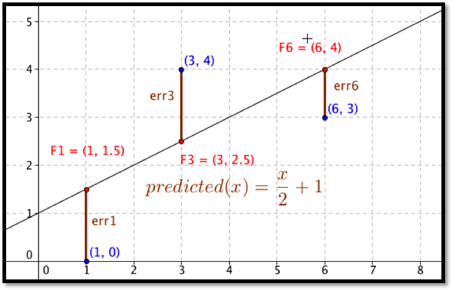
For each point we now compute the difference between the actual y-values and the predicted y-values. Our errors are the lengths of the brown segments in the picture, in this case \({3/2,3/2,1}\text{.}\) Finally we add the squares of the errors, \(9/4+9/4+1=11/2\text{.}\)
The best fitting line is defined to be the line that that minimizes the sum of the squares of the error. If we are trying to fit the data with a different model, we want to choose the equation from that model that minimizes the sum of the squares of the error.
Now that we have a definition we want to look at fitting a line to a simple data set in three ways. We will start with the data set of three points:
x
2
4
8
y
1
15
15
We want to start with the familiar method, using the trendline command from a graph. Then we want to use solver to minimize the sum of squared errors. Finally, we want to look at the function for sum of squared errors to see how we find the line using partial derivatives. After we have looked at all three approaches for this first example, we will consider more complicated examples.
Figure6.4.1.Video presentation of the first two examples>
Example6.4.2.Finding a Best-Fit Curve with Trendline.
Use the trendline command to find the best fitting line for the data:
x
2
4
8
y
1
15
15
Solution.
We start by making a table adding a scatterplot and adding a trendline to the graph. We remember to select the option to make the formula visible. The trendline command tells us the slope should be 2 and the intercept should be 1.
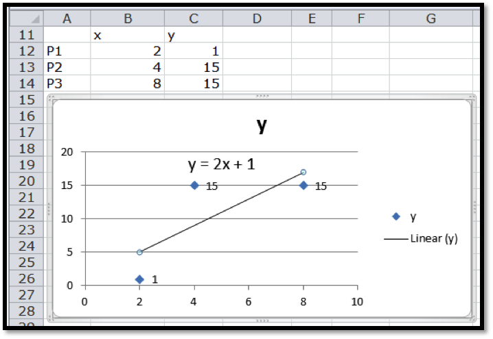
Example6.4.3.Finding a Best-Fit Curve with the Definition and Solver.
Use solver and the definition of best fitting to find the best fitting line for the data:
x
2
4
8
y
1
15
15
Solution.
We need to add the predicting equation to use solver . We start with a randomly chosen slope and intercept for our prediction line. Our table has a PredictedY column, which gives the value that would be on the line with our slope and intercept. We add in the error, which is the difference between the predicted y and the actual y, and the square of the error. We then take the sum of the squares of the errors.
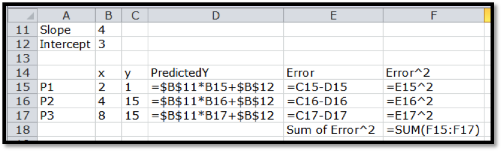
Our use of Solver is similar to when we were looking for a minimum of a function of one variable. We need to designate the cell with the value we want to minimize. We select the button to minimize. Recall that Solver selects the "Make unconstrained variables non-negative" and we want to uncheck that box. We now designate two cells that represent variables we can change.
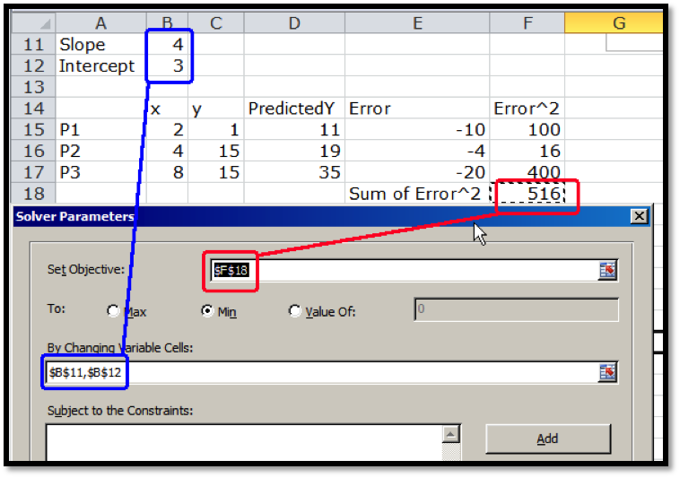
Solver produces the same answer. The best fitting line is
\begin{equation*}
y=2x+1\text{.}
\end{equation*}
Example6.4.4.Finding a Best-Fit Curve with the Definition and Calculus.
Use calculus, partial derivatives, and the definition of best fitting to find the best fitting line for the data:
x
2
4
8
y
1
15
15
Solution.
Before we can use partial derivatives to find a best fitting line, we need a function whose derivatives we are taking. We start with the chart we produced when we were using solver. This gives a formula for the squared error at each point in terms of the slope and intercept of the line.
Point
x
y
Predicted-y
\(error\)
\(error^2\)
\(P1\)
\(2\)
\(1\)
\(m*2+b\)
\(m*2+b-1\)
\((m*2+b-1)^2\)
P2
4
15
m*4+b
m*4+b-15
(m*4+b-15)
P3
8
15
m*8+b
m*8+b-15
\((m*8+b-15)^2\)
We can expand the error squared term and add up those values. After a straightforward but tedious computation, we see that we are trying to minimize
Setting the two partials to zero and solving we see the partials are both zero when \(m=2\) and \(b=1\text{.}\) One again, this method produces the same best fitting line.
We can use the same methods with a larger problem.
Example6.4.5.Use the Solver Method on a larger Data Set.
Figure6.4.6.Video presentation of this example
The table below gives census data for a collection of 10 states. Find the best fitting line to predict 2010 population based on 2000 population.
Pop 2000
Pop 2010
Wyoming
493,782
563,62
Delaware
783,600
897,934
Maine
1,274,923
1,328,361
Nevada
1,998,257
2,700,551
Iowa
2,926,324
3,046,355
Kentucky
4,041,769
4,339,367
Arizona
5,130,632
6,392,017
Washington
5,894,121
6,724,540
New Jersey
8,414,350
8,791,894
California
33,871,648
37,253,956
Solution.
We set up a spreadsheet in the same way we set it up in the last example. For an initial slope we will start with 1.1 for 10% growth. For a starting point we will guess an intercept of 0. As we did in the last example, the predicted population in 2010 is the slope times the population in 2000 plus the intercept. We add extra columns for the predicted population, the error between the prediction and the actual population, the square of the error. At the bottom of the last column, we add the squared errors. This gives the value we want to minimize.
The advantage of using the sum of squares definition is that we can find a best fitting curve using a model not supported by Excel. For example, if we have money invested with interest, but a portion of the capital kept available as cash without earning interest, we are looking for a curve of the form:
The trendline command does not let us choose such a model to find a best fitting curve. It is straightforward using the best fit construction.
Example6.4.7.Finding a Best-Fit Curve for a Nonstandard Model Equation.
Figure6.4.8.Video presentation of this example
We are given the following data on the value of a portfolio over time:
Year
Amount
0
$10,000
2
$10,920
5
$12,490
8
$14,300
9
$14,960
12
$17,169
14
$18,820
17
$21,630
19
$23,740
20
$24,880
We think the investor put some money in a secure account that does not give interest (a coffee can) and the rest of the money in an account that bore interest (an investment account). Find the amount deposited in each account and the interest rate of the investment account.
Solution.
We set this up much like we did for the linear model, except of model equation is now
We then use Solver to minimize cell E26, by changing cells B20:B22. Our solution indicates that \(\CashAmount=\$997.76\text{,}\)\(\DepositAmount=\$9,005.51\text{,}\) and \(\rate=1.05\text{.}\)
When we use this technique with other mathematical models, the only change is in the formula used for the predicted \(y\) value.
Example6.4.9.Finding a Best-Fit Logistic Curve.
Figure6.4.10.Video presentation of this example
We are managing a wood harvesting business. The number of trees available in a plot is modeled as constrained growth. That means we expect it to be modeled by a logistic equation.
We have the following information. Find the best fitting curve.
Time
Trees
0
150
5
400
10
1030
20
5300
30
12020
40
14510
Solution.
We set this up much like we did for the linear model, but using the logistic model.
We then use Solver to minimize cell E12, by changing cells B1:B3. Our solution indicates that \(\Capacity=14996\text{,}\)\(C=99.93\text{,}\) and \(\rate=0.200\text{.}\)
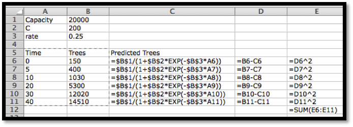
Strengths and weaknesses of the three methods of fitting curves.
We have examined three methods for finding a best fitting curve. From Chapter 1, we reviewed the method of plotting points and adding a trendline. Using the sum of least squared error definition of best fit, we looked at creating an error function and using Solver to minimize the error. We also looked at using partial derivatives to find critical points of the error function. It is worthwhile to look at some of the strengths and weaknesses of each method.
The method of graphing points and using the trendline command has the advantage of being the simplest method when it works. The biggest disadvantage of this method is that it only works with a small collection of mathematical models. (We can use this method if our desired equation is linear, \(y=mx+b\text{,}\) logarithmic, \(y=a \log(x)+b\text{,}\) polynomial of degree no more than 6, power, \(y=ax^b\text{,}\) or exponential, \(y=ae^{bx}\text{.}\)) As we have seen in this section, it is not hard to find situations where some other model should be used. This method also has the disadvantage of simply giving an answer without showing intermediate steps that might provide other useful information.
The method of using partial derivatives has the advantage of being mathematically clear. It shows us what is going on when we find a best fitting curve. However, in all but the simplest cases, this method has the disadvantage of involving a daunting flood of computations. This method is good for informing us about how the method works, but not a method we want to use in practice for most realistic problems.
The middle method, using Solver, is a hybrid of the other two methods. We start by deciding on the mathematical model that should fit our situation. As we saw, the method is straightforward to adapt to any kind of equation. It is straightforward to explicitly build our error function. This method also has the advantage of making the error attributed to each point visible. We can see if another curve is almost as good as the solution we find.
The disadvantages of the Solver method are the standard disadvantages of using Solver to find a minimum. Recall that Solver simply finds a local minimum from a starting point. Since solver uses numerical methods it looks for places where the partial derivatives are within our tolerance bounds of zero. We cannot expect Solver to give an answer that is more precise than the tolerance bounds. With all of the methods we should be aware that we need enough points to get a reasonable fit of the curve. Intuitively, a small change in any point should not cause a big change in the curve.
As a general rule, we will use the trendline command when it works with the kind of equation we have decided to use as our model.
Reading QuestionsReading Check
1.Reading check, Optimization and Best Fitting Curves.
This question checks your reading comprehension of the material is section 6.4, Optimization and Best Fitting Curves, of Business Calculus with Excel. Based on your reading, select all statements that are correct. There may be more than one correct answer. The statements may appear in what seems to be a random order.
Solver always find the global minimum of a function.
The method of graphing points and using the trendline command has the advantage of being the simplest method when it works.
The best fitting line is defined to be the line that that minimizes the sum of the squares of the error.
The minimize sum of squared errors method works with a broader array of functions.
the trendline command only works with a limited number of kinds of functions.
To find the best fitting curve we try to use the trendline command, even if the curve is not a line.
The method of using partial derivatives has the advantage of easiest to use.
None of the above
ExercisesExercises: Optimization and Best Fitting Curves Problems
Exercise Group.
For the given data sets:
Plot the points and add a linear trendline. Show the equation of the line.
Create a spreadsheet to compare the data to a linear function.
Add error to your spreadsheet. Find the best fitting line, using Solver.
Explicitly find the sum of squared errors function as a quadratic function of the slope m, and the intercept b.
Find the values of m and b that minimize the error function by taking partial derivatives and setting them equal to 0.
1.
The given points are:
x
-2
0
6
y
-7
5
15
Solution.
With trendlines we get the best fitting line:
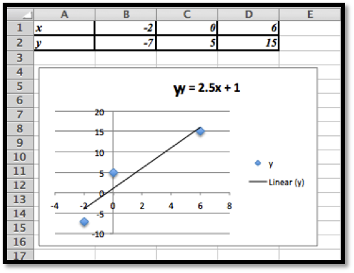
The line that gives us the best fitting curve is \(y=2.5 x+1\text{.}\)
Using the least square error method we have the following values.
We can set the information up as rows or as columns. Using the rows form the initial problem we have:
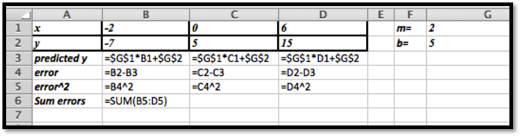
Next we use Solver to minimize the sum of the errors.
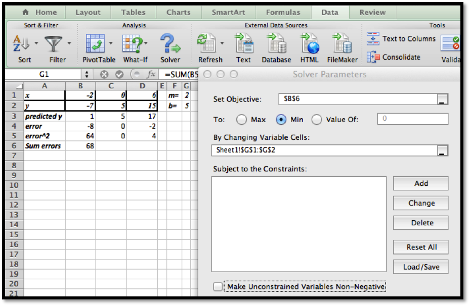
We started with \(m=2\) and \(b=5\) (somewhat arbitrary choices). We unchecked the constraint that the variables should be non-negative (\(m\) and/or \(b\) could theoretically be negative).
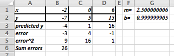
The least square method gives us the function \(y=2.5x+1\text{.}\)
(Comment: this shows that the least squares method gives the same answer as the trendline method. The Least Square method is a more general technique however and can be used in cases where the trendlines are not sufficient. )
2.
The given points are:
x
-2
0
6
y
24
10
20
3.
The given points are:
x
-3
-1
1
3
y
-2
6
10
10
Solution.
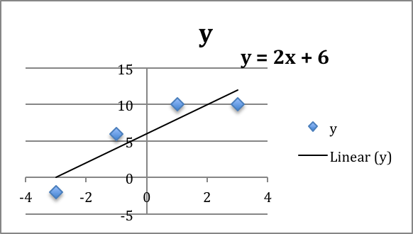
We would define \(m\) and \(b\) and use these to create
If we had not done the trendline, the question would be: what should the initial values for \(m\) and \(b\text{?}\)
The data ranges from \((-3,-2)\) to \((3,10)\) which suggests a slope of \(m\approx (10-(-2))/(3-(-3) )=12/6=2\text{.}\) Looking at the data near the \(y\)-axis suggests an initial guess of \(b\approx 7.5\text{.}\) So we would start with an Excel sheet like this:
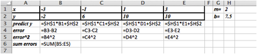
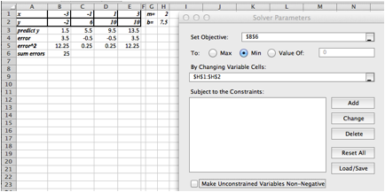
Setting up Solver as shown above we get \(m = 2\) and \(b = 6\text{.}\)
4.
The given points are:
x
-2
0
2
4
y
-7
5
11
11
Exercise Group.
Find the curve of the indicated type that gives the best fit for the data.
5.
Sally has money invested in a single account that compounds the return back into the account. Thus, the model we want to use for the amount is:
A scatter plot of the data will help us find some good initial guesses for the initial amount and the rate.
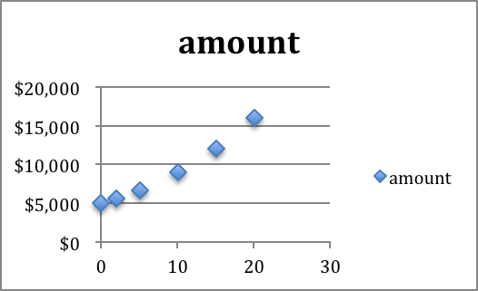
The \(y\)-intercept is about $5000. This occurs when time = 0, so the initial guess for the initial amount will be 5,000. The graph is an increasing function, so we know rate \(\gt 1\text{.}\)
Choosing \(\rate = 1\) will cause problems (the base of an exponential function should not be 1). Assuming this is a reasonable investment problem we will assume 5$ growth, so \(r = 1.05\text{.}\)
The initial set-up looks like this. We have included a graph of the data given versus the predicted numbers. The initial guesses are not bad, but clearly we can do better.
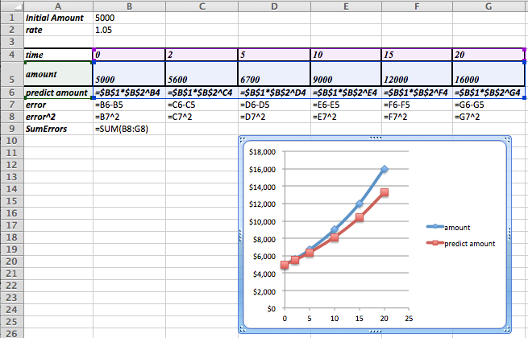
After using Solver we determine that the best model function for our data is as follows:
Notice that the data is now indistinguishable from the model function in the graph.
Remark: If we use Trendlines to find a exponential function that fits the data, we would get \(y=5001 e^{0.0583*time}\text{.}\) The least square error analysis shows that this is not as good of an approximation as the one we just found using Solver! The least squares error for the trendline is approximately 30% greater than for the value we found using Solver.
6.
Fred has put some of his money in a cash account that pays no interest and the rest of his money a single account that compounds the return back into the account. Thus, the model we want to use for the amount is
Mary has put some of her money in an investment that pays simple interest and the rest of her money into a single account that compounds the return back into the account. Thus, the model we want to use for the amount is
The function we are looking for has a linear component (\(\Amount_1+\Return_1*|time\)), and an exponential component. There is no trendline that would do this for us.
What do we know about these values?
We have $10,000 at the very beginning and this is split into two different investments, so Amount 1 + Amount 2 = $10,000.
What is Return 1? It should be the return on the first part of the investment. So it should be some amount we receive on an investment of at most $10,000. A first guess would be that the value is in the hundreds of dollars, but maybe close to $150 or $200?
The rate is our final parameter. This is the growth due to interests. We will start with a guess of \(rate = 1.05\text{.}\)
The Excel commands used to generate the table are as follows:
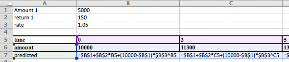
It is worth graphing both the actual data and the predicted data to see if we are setting the problem up correctly.
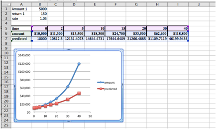
The general shape of the predicted values graph seems fine. The values are off, but Solver will be able to reduce the error.
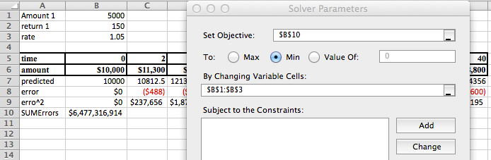
The solution is:
Amount 1
3317.59
return 1
163.19
rate
1.07
Hence \(\Amount_2 = 10,000 - 3,317.59 = 6,682.41\text{,}\) and we have that
In Excel the data and the predicted values now line up very nicely.
8.
John has divided his money between two accounts. They both compound their returns, but they pay different rates. Thus, the formula that models the investment is: